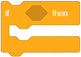
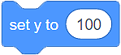
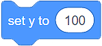
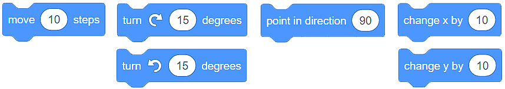

Grananje¶
Već smo pomenuli da je ponavljanje jedne ili više naredbi (blokova) moćan kocept u programiranju. Jednako koristan i važan je koncept grananja programa. Grananje je koncept koji omogućava da se deo naredbi programa izvši, a deo ne. Koje naredbe će biti izvršene zavisi od ispunjenosti uslova. Uslov možeš da shvatiš kao tvrđenje koje može biti tačno ili netačno.
Iako smo do sada stvarali samo programe u kojima su se sve naredbe izvršavale redom, jedna za drugom, od početka do kraja programa, većina programa sadrži grananje.
Razlikujemo dva bloka namenjena odlučivanju:
Blok koji obezbeđuje da se izvrše određene naredbe ako je rezultat provere ispunjenosti uslova tačno  i
Blok koji obezbeđuje da se izvrše određene naredbe ako je rezultat provere ispunjenosti uslova tačno, a druge naredbe ako je rezultat provere ispunjenosti uslova netačno.
Блокови за апсолутно кретање¶
У категорији Кретање, на располагању имаш 4 блока која омогућавају апсолутно кретање ликова.

Употребљаваћеш их у ситуацијама када буде потребно да програмираш ликове тако да се крећу до тачно одређеног места (тачке) на позорници.
Појурила мачка миша…
Мачка се налази у центру позорнице, а миш у тачки (x:150 y:100).

Подсећамо те да је позорница правоугаони простор ширине 480 и висине 360 корака (пиксела). Центар позорнице налази се у тачки (x:0 y:0).
Ако желиш да мачка улови миша довољно је употребиш блок  .
.
Ако желиш да лов траје, употреби блок  . Тиме обезбеђујеш да мачка клизи једну секунду од тачке (x:0 y:0) до тачке (x:150 y:100).
. Тиме обезбеђујеш да мачка клизи једну секунду од тачке (x:0 y:0) до тачке (x:150 y:100).
Употребом блокова  и  можеш да симулираш прикрадање мачке мишу:
и  можеш да симулираш прикрадање мачке мишу:

Тачку у којој се лик тренутно налази (тренутну вредност x: и y:) увек можеш да видиш испод позорнице, у оквиру листе ликова.

 Дакле, употребом блокова за апсолутно кретање саопштаваш лику тачно место на позорници на које треба да стигне.
Дакле, употребом блокова за апсолутно кретање саопштаваш лику тачно место на позорници на које треба да стигне.
Блокови за релативно кретање¶
Релативно кретање није одређено местом у које лик треба да стигне, већ тренутним положајем лика.
У категорији Кретање, на располагању имаш неколико блокова која омогућавају релативно кретање.
{kind=link}
У примеру у коме је мачка јурила миша знали смо тачан положај миша (тачку у којој се налази). Много су чешће ситуације у којима не знамо тачан положај ликова. У тим случајевима ликове покрећемо коришћењем блокова за релативно кретање.
Код релативног кретања јако је важно да усмеримо (окренемо) лик у страну у коју желимо да се креће. То постижемо повлачењем стрелице по кругу блока  .
.
Добро је да знаш да у Скречу усмерење ка 0 представља усмерење нагоре, ка 90 удесно, ка 180 надоле, а ка -90 улево.

Тренутно усмерење лика увек можеш да видиш испод позорнице, у оквиру листе ликова, у пољу Смер.
Дакле, употребом блокова за релативно кретање саопштаваш лику где треба да се усмери и креће у односу на његов тренутни положај.
Остали блокови за кретање¶
У категорији Кретање, на располагању имаш још 4 блока која омогућавају кретање ликова.

Позорница је ограничен простор. Када лик стигне до ивице (каже се и руба) позорнице, природно је да се окрене и наставни кретање у другом правцу или смеру. Такво понашање лика обезбеђујеш коришћењем блока  .
.
Начин на који ће лик наставити кретање зависи од тебе. Ако, у оквиру блока  подесиш да се лик окреће на све стране, он ће наставнити кретање окренут наглавачке. Ово се неће догодити ако из падајуће листе блока одабереш лево-десно
подесиш да се лик окреће на све стране, он ће наставнити кретање окренут наглавачке. Ово се неће догодити ако из падајуће листе блока одабереш лево-десно  .
.

Тренутни начин кретања лика (На све стране , Лево/десно или Без окретања ) увек можеш да видиш испод позорнице, у оквиру листе ликова, кликом у поље Смер.
Вратимо се на наше ликове:  и
и  .
.
Ако не знамо тачан положај миша, а желимо да мачка буде усмерена на њега (окренута ка њему), можемо да употребимо блок  . Довољно је да из падајуће листе одаберемо лик Миш
. Довољно је да из падајуће листе одаберемо лик Миш  и проблем је решен.
и проблем је решен.
Показаћемо ти на примеру како функционишу последња два блока.
Појурила мачка миша…
Мачка јури миша, клизећи ка њему. Миш се непрестано окреће и иде ка курсору, који ми померамо по позорници.

Изнад сваког од ликова налазе се скрипте које обезбеђују описано понашање.
Унапреди горњи програм¶
- Задатак
Унапреди горњи програм тако што ћеш додати још један лик - јабуку. Нека миш јури јабуку, а мачка миша. Нека се јабука креће ка курсору (којим ми управљамо), миш према јабуци, мачка према мишу.

Могуће решење: